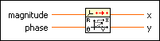

1D Polar to Rectangular PtByPt VI
Owning Palette: Geometry PtByPt VIs
Requires: Full Development System
Converts the polar representation of a complex number into the rectangular representation of the complex number.
 | Note By default, reentrant execution is enabled in all Point By Point VIs. |

 Add to the block diagram Add to the block diagram |
 Find on the palette Find on the palette |